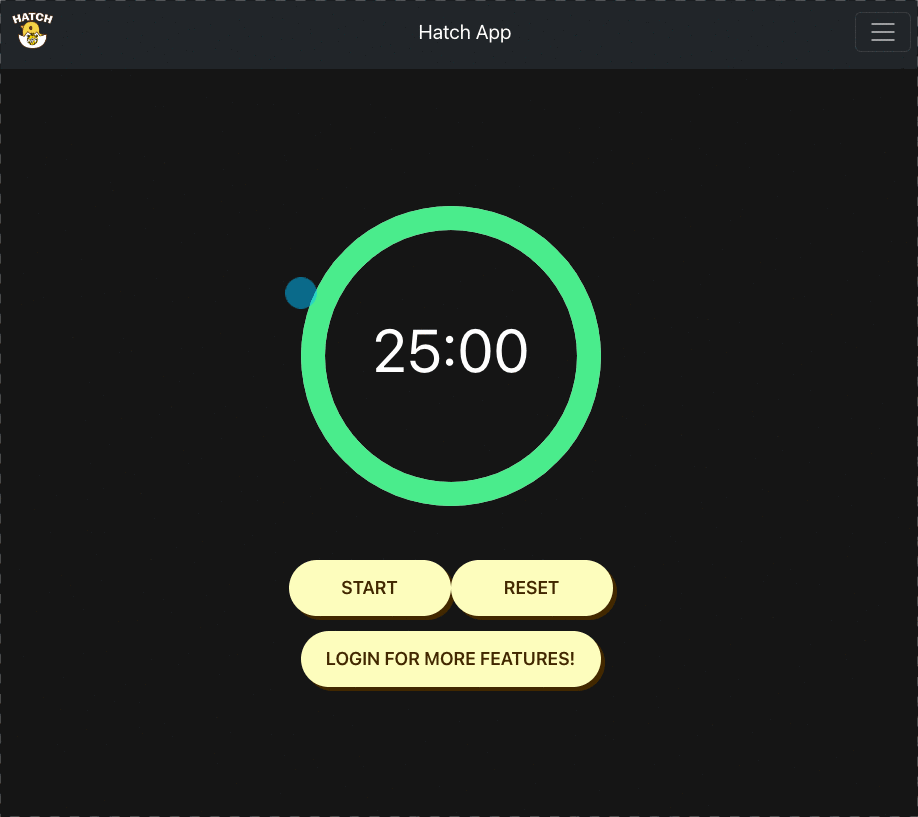
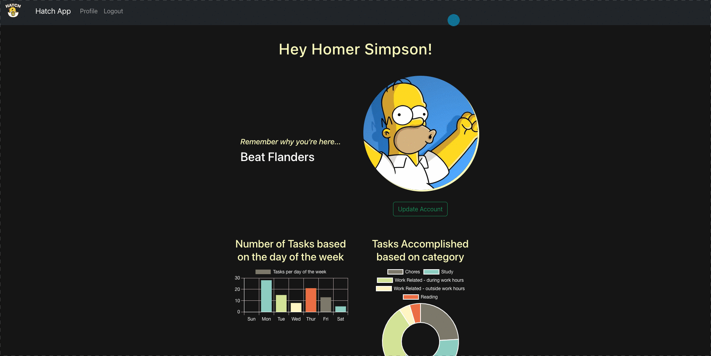
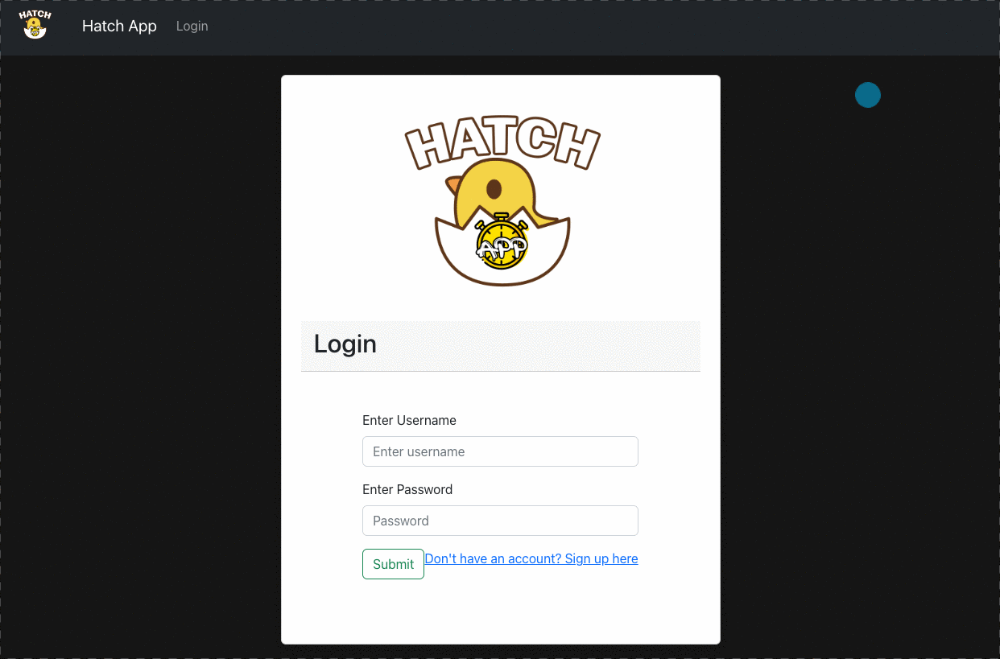

hatch app
Hatch app takes the pomodo teqchnique (timer for 25 minutes of work and a 5 minute break) and adds the new element of being able to track the tasks you complete in that time. The tasks are tracked and displayed based on how many pomodoros are completed on a daily and weekly basis. Anyone can visit our home page and have the functionality of a standard pomodoro timer. The benefit comes from signing up and loging in for more features.
My role in this project is designing the back-end using the FastAPI framework to communicate with the SQL database. I set up end-points
Please visit the full site.


